MIT6.5830-Lab4
MIT6.5830 的数据库课程。Lab4 主要是完成数据库事务以及锁机制，在 Lab 中只是考虑设计了 page 级别锁。
Exercise1
Exercise2
Exercise3
Exercise4
Exercise5
为了简化工作，Lab4采用了NO STEAL/FORCE缓冲区策略，不需要记录undo log和redo log日志（Lab6中完成）：
NO STEAL：不允许一个未提交的事务将修改更新到磁盘，即磁盘中不会存在uncommitted数据，因此无需回滚操作，不需记录undo log。
FORCE：事务在提交之后必须将所有更新立刻持久化到磁盘（产生很多随机写，效率低），但无需记录redo log。
背景知识
事务
事务：事务是一组以原子方式执行的数据库操作（读取、插入、删除），是不可分割的。
事务的四大特性（ACID）
原子性（Atomicity）：事务是一个不可分割的单位。
一致性（Consistency）：事务执行是从一个一致状态到另一个一致状态，一致指的是：① 符合数据库的约束规则（主键、外键、非空、唯一性约束等等）； ② 符合业务逻辑规则（转出金额等于转入金额、购买数量不超过库存数量等等）。
隔离性 （Isolation）：并发执行的各个事务之间互不干扰，是完全隔离的。
持久性（Durability）：事务一旦提交，（甚至系统崩溃后）对数据库中数据的改变都是永久性的。
事务的并发执行遇到的问题
（脏写）
脏读：当一个事务正在访问数据并对该数据进行修改，但是修改还未提交到数据库，此时另一个事务访问到这个数据。违反了事务的原子性、隔离性、一致性。
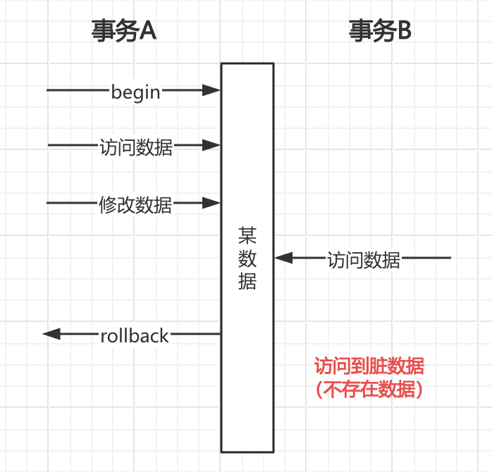
不可重复读：在一个事务中多次读取同一个数据，在该事务两次读数据之间，由于另一个事务对该数据的访问和修改导致同一事务中两次读到的数据是不一致的。违反了事务的一致性。

不可重复读和脏读的区别：脏读是读到了未提交的数据（压根这个数据就不存在所以是脏数据），不可重复读是读到了已提交的数据（因为是已提交的数据一般来说是可以被接受的）。
幻读：在一个事务中多次查询符合条件的数据记录，出现了前后两次查询数据记录数量不一致的情况。幻读主要关注的是查询结果集发生了变化，因为有新的符合条件的行被插入或删除。

不可重复读和幻读的区别：不可重复读主要关注的是同一行数据在两次读取时发生了变化；幻读主要关注的是查询结果集发生了变化。
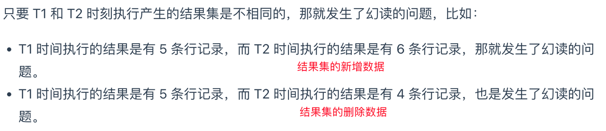
事务隔离级别
在事务并发执行的过程中可能会遇到脏读、不可重复读、幻读的现象，而他们的严重程度也从大到小。因此SQL标准提出了四种隔离级别来规避这些现象（隔离级别越高，性能越低）：
读未提交（read uncommitted）：指一个事务还没提交时，它做的变更就能被其他事务看到；
读已提交（read committed）：指一个事务提交之后，它做的变更才能被其他事务看到；
可重复读（repeatable read）：指一个事务执行过程中看到的数据，一直跟这个事务启动时看到的数据是一致的；MySQL InnoDB 引擎的默认隔离级别
串行化（serializable）：多个事务对同一条记录进行读写操作时，会按照串行化的方式——后访问的事务等待前一个事务执行完成才能继续执行。

事务隔离级别如何实现
读未提交：因为可以读到未提交事务修改的数据，所以直接读取最新的数据就可以；
串行化：通过加读写锁的方式来避免不同事务的并行访问；
读已提交、可重复读：通过Read View（数据快照）来实现，它们的区别在于创建Read View的时机不同——读提交是在每个语句执行前都会重新生成一个Read View，而可重复读隔离级别是启动事务时生成一个Read View，然后整个事务期间都在用这个Read View。
什么是Read View？Read View在MVCC中又是如何工作的？
复习一下MVCC：
多版本并发控制，MVCC在MySQL InnoDB中的实现主要是为了提高数据库的并发性能，通过版本链来控制并发事务访问同一个记录时的行为。
Read View的4个字段：


（重点）当一个事务去访问记录时，除了自己的更新记录可见之外，还有其他几种情况：
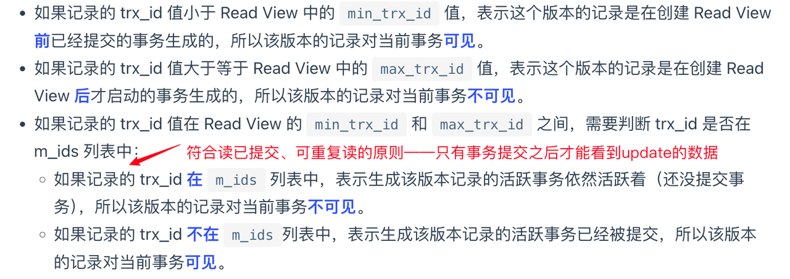
MySQL可重复读是如何一定程度上解决幻读的？
针对快照读（普通select语句），是通过MVCC方式解决幻读的：事务开始后（执行begin语句并且在执行第一条查询语句后），会创建一个Read View，后续查询会根据这个Read View到undo log版本链中找到相应的数据，所以事务每次查询数据的结果都是一样的。
针对当前读（update、insert、delete语句），当前读在执行前都会首先查询最新版本的数据（不会到undo log中查询事务开始时的数据版本），然后再做进一步操作。
InnoDB为了解决在可重复读隔离级别下使用当前读出现的幻读现象，引入间隙锁：
在可重复读中幻读被完全解决了吗？
特殊情况1：

特殊情况2：

要避免此类场景下的幻读出现，就是尽可能在事务A开启之后马上执行select * for update语句，因为它会对记录加next-key-lock锁，避免其他事务插入新记录。
总结：MySQL 可重复读隔离级别并没有彻底解决幻读，只是很大程度上避免了幻读现象的发生。
AUTO-INC的轻量级锁会在主从复制场景中出现数据不一致的情形
锁
如何对数据库进行备份
对于数据库的存储引擎支持可重复读的，可以在备份数据库之前先开启事务，整个事务执行期间使用同一个Read View，这样由于MVCC的支持在备份期间是可以对数据进行更新操作的（mysqldump工具）。
对于数据库的存储引擎不支持可重复读的，只能加全局锁将整个数据库设置为只读状态，但是会造成业务停滞。
常用的行级锁和表级锁
- 排他锁（eXclusive Lock，X锁）
事务T对数据对象A加上X锁，则事务T可以读A也可以修改A，其他事务不能再对数据对象A加任何锁，直到T释放A上的锁。这保证了其他事务在T释放A上的锁之前不能再读取和修改A。
- 共享锁（Shared Lock，S锁）
事务T对数据对象A加上S锁，则事务T可以读A但不能修改A，其他事务只能再对A加S锁而不能加X锁。这保证了其他事务可以读A，但在T释放A上的S锁之前不能对其做任何修改。
S锁和X锁都是行级别(row-level)的行锁，加在索引记录上的，兼容与否是对于一条记录来说的。若想对1000万条数据加锁，需要判断每条数据是否有正在上锁，这个效率非常低。这个时候就希望锁的层次有区别，例如在加S、X锁在行级时先在表级别加锁——由此引入意向锁。
- 意向锁（Intention Lock，I锁）
加意向锁的目的是为了表明某事务正在锁定一行，表示加锁的意图。
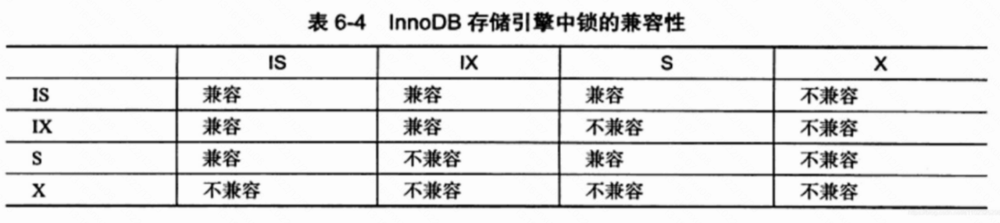
二阶段锁协议
Exercise 1
锁的粒度从大到小分为 Database -> Table -> Page -> Tuple，而本次实验只要求实现Page级别锁。
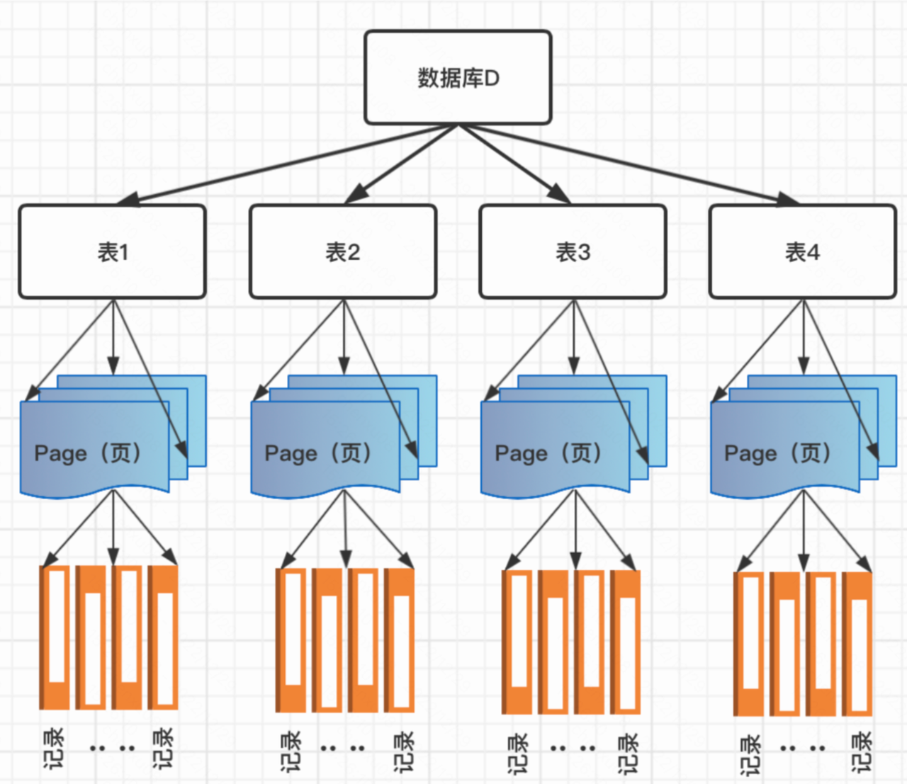
实现的排他锁和共享锁应当满足以下条件：
在一个事务读取一个对象前，应该要有其的共享锁。
在一个事务写入一个对象前，应该要有其的排它锁。
一个对象的共享锁可以被多个事务共享。
一个对象的排它锁只能被一个事务所拥有。
如果一个事务已经拥有了一个对象的共享锁，则其拥有的锁可以被升级为排它锁。
创建页面级别的锁类
1
2
3
4
5
6
7
8
9
10
11
12
13
14
15
16
private class PageLock {
private TransactionId tid; // 获取锁的事务
private PageId pid; // 锁所在的页面
private LockType type; // 锁类型（S or X）
public PageLock(TransactionId tid, PageId pid, LockType type) {
this.tid = tid;
this.pid = pid;
this.type = type;
}
public LockType getType() {
return type;
}
}锁类型LockType
1
2SHARED_LOCK (0, "共享锁"),
EXCLUSIVE_LOCK (1, "排它锁");LockManager锁管理类（核心）
一个页可以有多把锁（S锁），一把锁只能存在于一个页，即锁与页是多对一的关系；
一个事务中可以获取多把锁，一把锁只能被一个事务获取，即锁与事务也是多对一的关系；
由a和b得出来设计存储锁的数据结构：
1
public ConcurrentHashMap<PageId, ConcurrentHashMap<TransactionId, PageLock>> lockMap;
在LockManager中还有一些比较重要的方法：
判断指定事务tid在指定页面pid是否存在锁
1
2
3
4
5
6
7
8
9// 如果指定的事务在指定的页面上有锁，则返回true
public boolean holdsLock(TransactionId tid, PageId p) {
// TODO: some code goes here
// not necessary for lab1|lab2
if (lockMap.get(p) == null) {
return false;
}
return lockMap.get(p).get(tid) != null;
}申请锁流程

1 | public synchronized boolean acquireLock(PageId pageId, TransactionId tid, LockType requestLock, int reTry) throws InterruptedException { |
- 通过BufferPool的
getPage方法获取page级别的锁
1 | public Page getPage(TransactionId tid, PageId pid, Permissions perm) |

Exercise 2
HeapFile的insertTuple方法
在HeapFile的insertTuple方法中，首先要寻找页面是否存在空闲的slot，这一操作首先会获取页面上的X锁，一旦找到空闲的slot就写入。但是这种操作在S2PL协议下有时会大量占用资源：在没有空闲slot的情况下，会不断地获取每个页上的X锁而不释放。其实当页面没有空闲的slot时我们可以直接释放该页面的X锁，这虽然违反了S2PL协议，但由于我们没有对该页面上的数据进行更新，所以就算释放了页面上的X锁，也不会影响其他并发事务的操作。

加入释放锁逻辑：
HeapFile的deleteTuple方法

什么时候做锁的释放逻辑
Exercise 3
完成NO STEAL策略：事务的修改必须在事务提交之后写入磁盘。
这意味着在事务执行过程中，可以通过丢弃BufferPool中的脏页并从磁盘重新读取它们完成BufferPool的复原（回滚）来absort事务。所以脏页是完成BufferPool复原很重要的依据，因此在LRU策略中我们不能驱逐脏页。
- 修改LRUCache中的put方法
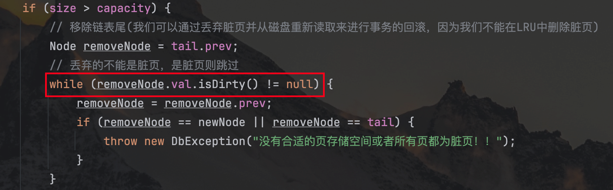
1 | public synchronized void put(PageId key, Page val) throws DbException { |
Exercise 4
事务结束后，调用BufferPool的transactionComplete方法，判断事务是成功完成还是失败需要回滚。
事务成功完成时，需要将BufferPool中的脏页全部刷新到磁盘；事务失败则需要回滚，将磁盘中的数据反向刷新到BufferPool中替换掉脏页。
释放掉事务所拥有的所有锁，完成S2PL的释放阶段。
1 | /** |
rollback没有将磁盘的内容反向刷新到bufferpool中为什么才能通过测试用例？

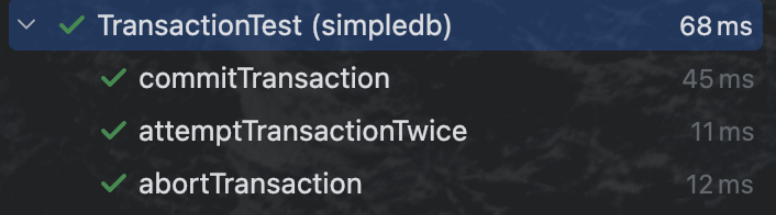

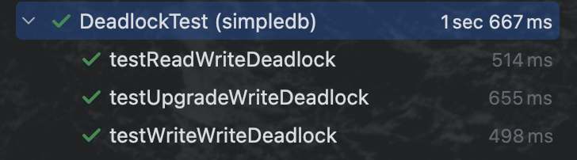
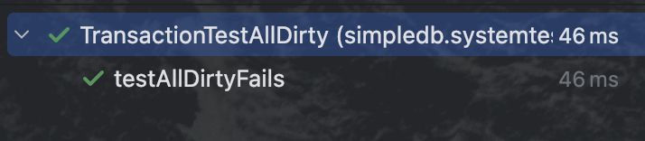

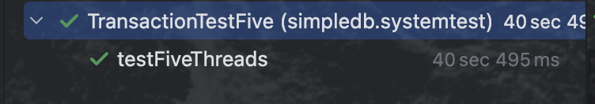
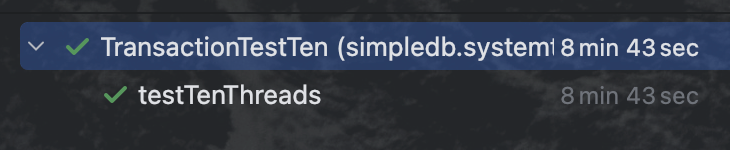
Exercise 5
死锁就是多个并发进程因互相争夺系统资源而造成的相互等待的现象。
死锁产生的四个必要条件
互斥条件：一个资源只能被一个进程获取，不允许其他进程访问；
请求和保持条件：一个进程因请求资源而发生阻塞时，不会释放自己占有的资源；
不可剥夺条件：进程已获得的资源，在未完成使用之前不能被其他进程剥夺，只能自己释放；
循环等待条件：若干进程之间形成头尾相连互相等待的环行资源。
死锁的处理方法
死锁检测与死锁恢复
在死锁之前不采取任何措施，只检测系统有没有发生死锁，发生了再采取一些措施解除死锁。
- 死锁检测：死锁定理
*
死锁预防
死锁避免